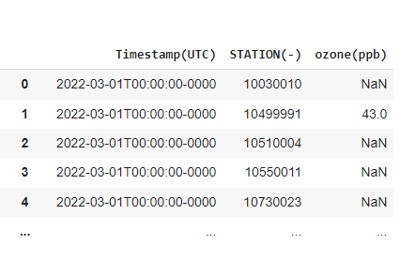
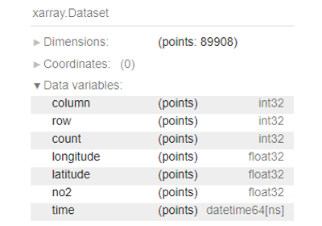
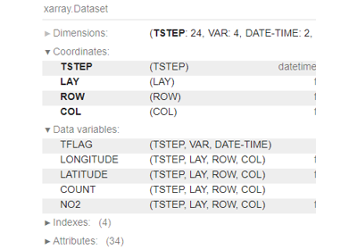

Get data examples¶
Examples showing how to get data.


Get DataFrame for AQS ozone


Get COARDS formatted NetCDF TropOMI NO2
Get COARDS formatted NetCDF TropOMI NO2

Get IOAPI formatted NetCDF TropOMI NO2
Get IOAPI formatted NetCDF TropOMI NO2